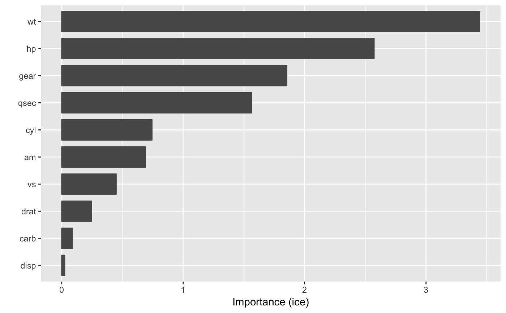

vip.RdPlot variable importance scores for the predictors in a model.
vip(object, ...) # S3 method for default vip(object, num_features = 10L, bar = TRUE, width = 0.75, horizontal = TRUE, alpha = 1, color = "grey35", fill = "grey35", size = 1, shape = 19, ...)
| object | A fitted model object (e.g., a |
|---|---|
| ... | Additional optional arguments to be passed onto |
| num_features | Integer specifying the number of variable importance
scores to plot. Default is |
| bar | Logical indicating whether or not to produce a barplot. Default
is |
| width | Numeric value specifying the width of the bars when
|
| horizontal | Logical indicating whether or not to plot the importance
scores on the x-axis ( |
| alpha | Numeric value between 0 and 1 giving the trasparency of the bars. |
| color | Character string specifying the color to use for the borders of
the bars. Could also be a function, such as
|
| fill | Character string specifying the color to use to fill the bars.
Could also be a function, such as |
| size | Numeric value indicating the size to use for the points whenever
|
| shape | Numeric value indicating the shape to use for the points
whenever |
# # A projection pursuit regression example # # Load the sample data data(mtcars) # Fit a projection pursuit regression model mtcars.ppr <- ppr(mpg ~ ., data = mtcars, nterms = 1) # Construct variable importance plot vip(mtcars.ppr, method = "ice")#> Warning: Setting `method = "ice"` is experimental, use at your own risk!